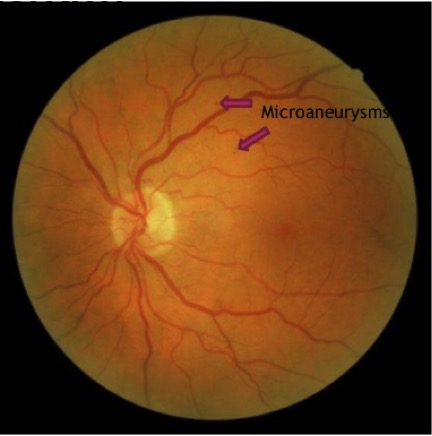

What is the Diabetic Retinopathy?
The Diabetic Retinopathy is the leading and common cause of acquired blindness between ages of 25 and 74 in the United States. It is rare to have this eye disease for under the age of ten years.
Diabetic retinopathy is an eye disease that is caused by diabetes mellitus. Diabetes mellitus is very similar to diabetic retinopathy, so it is a disease of abnormal blood sugar regulation. Diabetes can causes permanent damage throughout the body, including the eyes. When this disease is first developed in the eye, it characterizes small areas of bleeding and fluid leakage from damaged blood vessels. The extreme leakage can cause swelling of the retina, which is called diabetic macula edema. When the disease worsens, it becomes threatening and grows new abnormal blood vessels (known as neovascularization) in the eye. These abnormal blood vessels are fragile so they can be ripped and bleed easily, which causes the eye to fill with blood.
There are two types of Diabetic Retinopathy; background and proliferative. Background retinopathy is common when diabetes has been present for some years and is less of a threat to the sight than the proliferative retinopathy. On the other side, Proliferative retinopathy is the latest stage where there is a development of abnormal blood vessels on the optic nerve head or the retina.
RISK FACTORS:
- age
- duration of diabetes
- smoking
- high blood pressure
- poor diabetic control
- high blood cholesterol
- renal impairment
- pregnancy